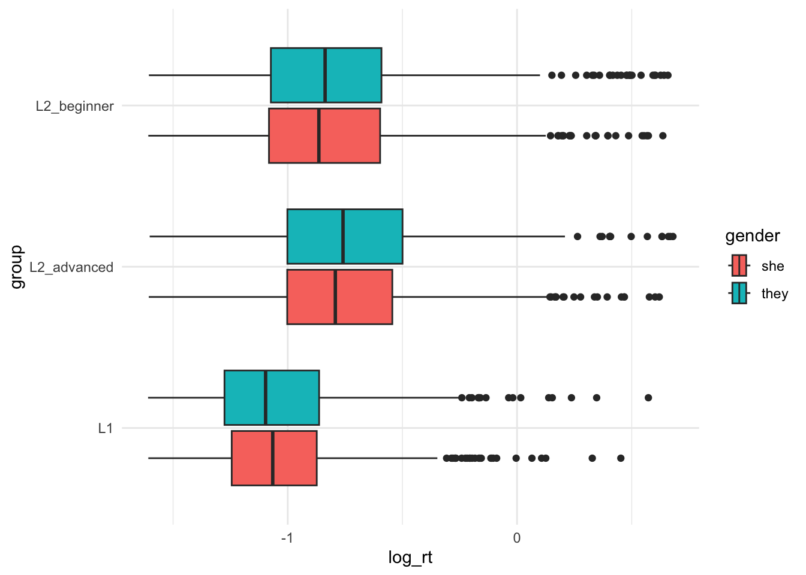
Inclusive they consult
Big picture:
There was not evidence that inclusive they was considered a violation in any group, but L1 speakers were faster overall than L2 speakers.
Sum of all of region 2 in comparison
Visualization:
Model:
The model was a Bayesian mixed effects linear regression. We would consider there to be compelling evidence of an effect if 95% of the highest density interval does not intersect 0. The model was fit in brms using Markov chain monte carlo sampling across 6 processing cores. The model used default priors. The outcome variable was log transformed reaction times, and the predictors were gender, group and their interaction. The random effects included a random slope by participant.
The results of the model do not suggest that any of the three groups processed the two conditions distinctly (we can see this from the interaction terms and genderthey fixed effect).
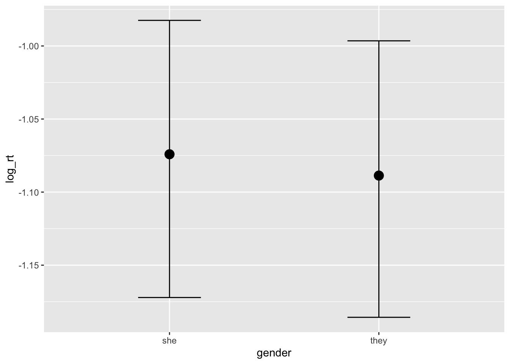
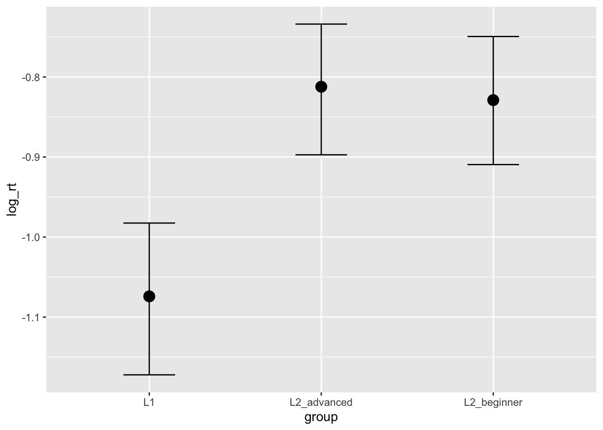
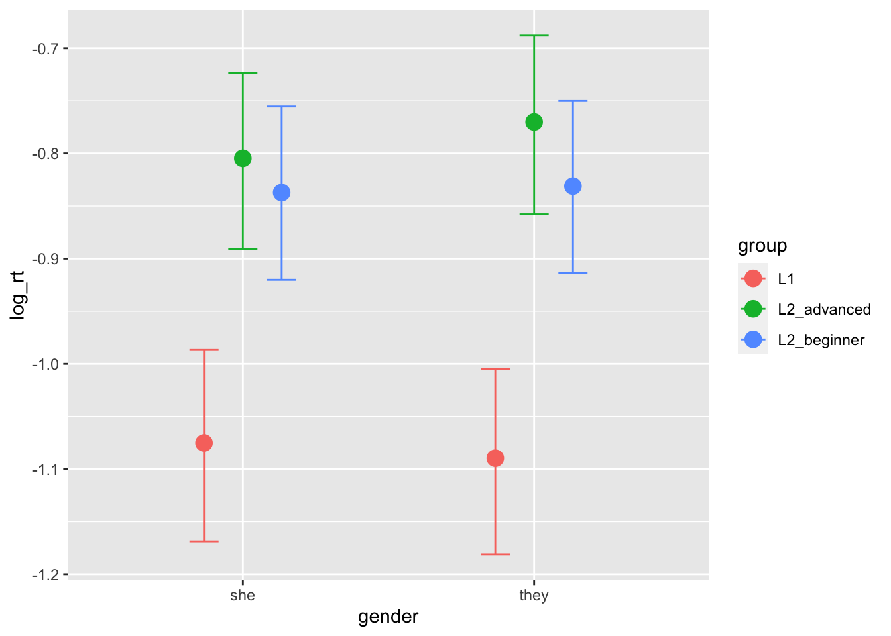
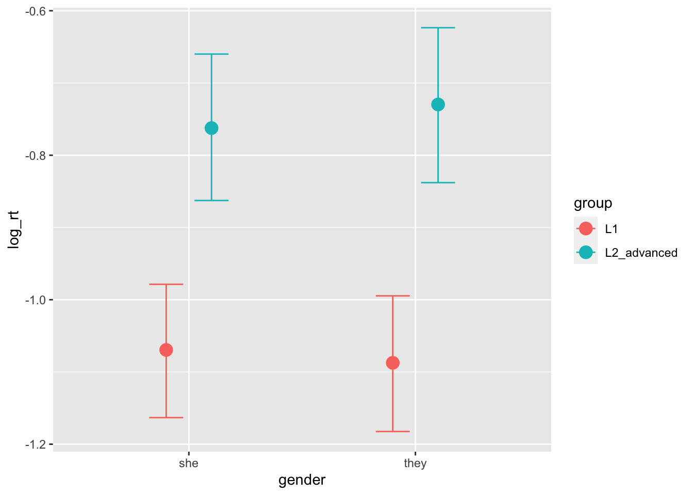
Family: gaussian
Links: mu = identity; sigma = identity
Formula: log_rt ~ gender * group + composite_score + (gender | participant)
Data: reg2_dat (Number of observations: 2873)
Draws: 4 chains, each with iter = 2000; warmup = 1000; thin = 1;
total post-warmup draws = 4000
Multilevel Hyperparameters:
~participant (Number of levels: 52)
Estimate Est.Error l-95% CI u-95% CI Rhat Bulk_ESS
sd(Intercept) 0.23 0.03 0.19 0.29 1.01 1040
sd(genderthey) 0.08 0.02 0.05 0.11 1.00 1746
cor(Intercept,genderthey) 0.00 0.20 -0.37 0.40 1.00 2932
Tail_ESS
sd(Intercept) 1194
sd(genderthey) 2450
cor(Intercept,genderthey) 2743
Regression Coefficients:
Estimate Est.Error l-95% CI u-95% CI Rhat Bulk_ESS
Intercept -1.06 0.07 -1.21 -0.92 1.00 928
genderthey -0.02 0.02 -0.06 0.02 1.00 3208
groupL2_advanced 0.31 0.07 0.17 0.45 1.00 966
composite_score -0.01 0.03 -0.06 0.04 1.00 1221
genderthey:groupL2_advanced 0.05 0.03 -0.01 0.11 1.00 2843
Tail_ESS
Intercept 1340
genderthey 2866
groupL2_advanced 1640
composite_score 1615
genderthey:groupL2_advanced 2810
Further Distributional Parameters:
Estimate Est.Error l-95% CI u-95% CI Rhat Bulk_ESS Tail_ESS
sigma 0.28 0.00 0.28 0.29 1.00 6758 3064
Draws were sampled using sampling(NUTS). For each parameter, Bulk_ESS
and Tail_ESS are effective sample size measures, and Rhat is the potential
scale reduction factor on split chains (at convergence, Rhat = 1).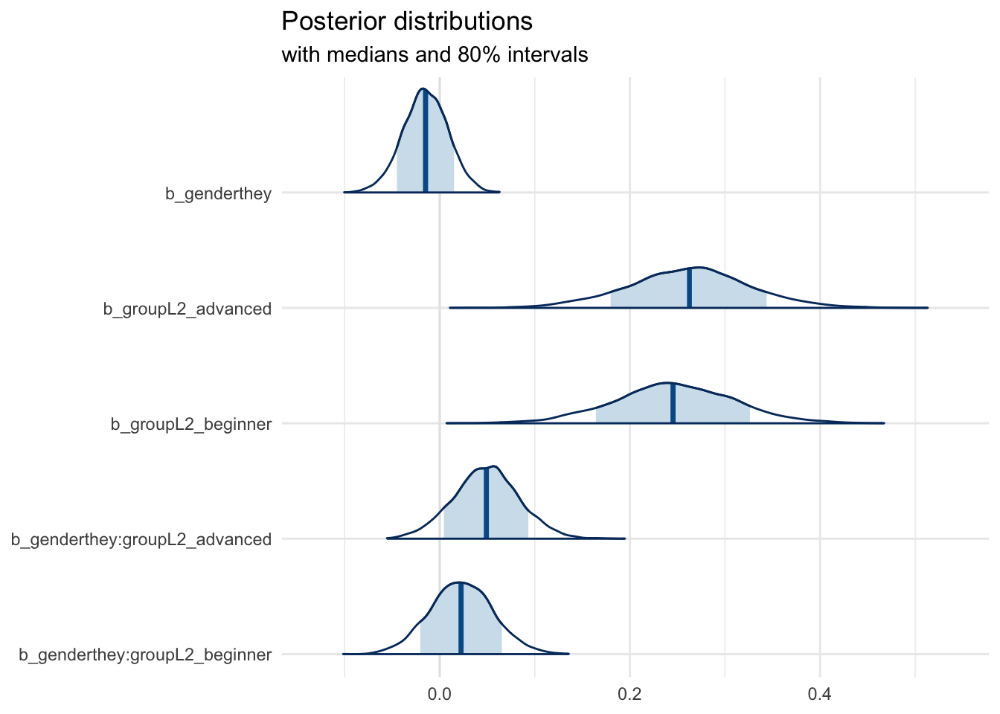
describe_posterior(
bayes_mod,
effects = "fixed",
component = "all",
test = c("p_direction", "p_significance", "rope"),
centrality = "all"
) %>%
as.data.frame() %>%
mutate(across(where(is.numeric), round, 2)) %>%
knitr::kable(row.names = FALSE)Warning: There was 1 warning in `mutate()`.
ℹ In argument: `across(where(is.numeric), round, 2)`.
Caused by warning:
! The `...` argument of `across()` is deprecated as of dplyr 1.1.0.
Supply arguments directly to `.fns` through an anonymous function instead.
# Previously
across(a:b, mean, na.rm = TRUE)
# Now
across(a:b, \(x) mean(x, na.rm = TRUE))Warning: 'xfun::attr()' is deprecated.
Use 'xfun::attr2()' instead.
See help("Deprecated")
Warning: 'xfun::attr()' is deprecated.
Use 'xfun::attr2()' instead.
See help("Deprecated")| Parameter | Component | Median | Mean | MAP | CI | CI_low | CI_high | pd | ps | ROPE_CI | ROPE_low | ROPE_high | ROPE_Percentage | Rhat | ESS |
|---|---|---|---|---|---|---|---|---|---|---|---|---|---|---|---|
| b_Intercept | conditional | -1.06 | -1.06 | -1.06 | 0.95 | -1.21 | -0.92 | 1.00 | 1.00 | 0.95 | -0.04 | 0.04 | 0.00 | 1 | 884.91 |
| b_genderthey | conditional | -0.02 | -0.02 | -0.02 | 0.95 | -0.06 | 0.02 | 0.79 | 0.15 | 0.95 | -0.04 | 0.04 | 0.87 | 1 | 3191.78 |
| b_groupL2_advanced | conditional | 0.31 | 0.31 | 0.31 | 0.95 | 0.17 | 0.45 | 1.00 | 1.00 | 0.95 | -0.04 | 0.04 | 0.00 | 1 | 952.10 |
| b_composite_score | conditional | -0.01 | -0.01 | 0.00 | 0.95 | -0.06 | 0.04 | 0.58 | 0.09 | 0.95 | -0.04 | 0.04 | 0.91 | 1 | 1214.53 |
| b_genderthey:groupL2_advanced | conditional | 0.05 | 0.05 | 0.06 | 0.95 | -0.01 | 0.11 | 0.94 | 0.62 | 0.95 | -0.04 | 0.04 | 0.38 | 1 | 2812.89 |
| sigma | sigma | 0.28 | 0.28 | 0.28 | 0.95 | 0.28 | 0.29 | 1.00 | 1.00 | 0.95 | -0.04 | 0.04 | 0.00 | 1 | 6670.75 |
She vs. they only
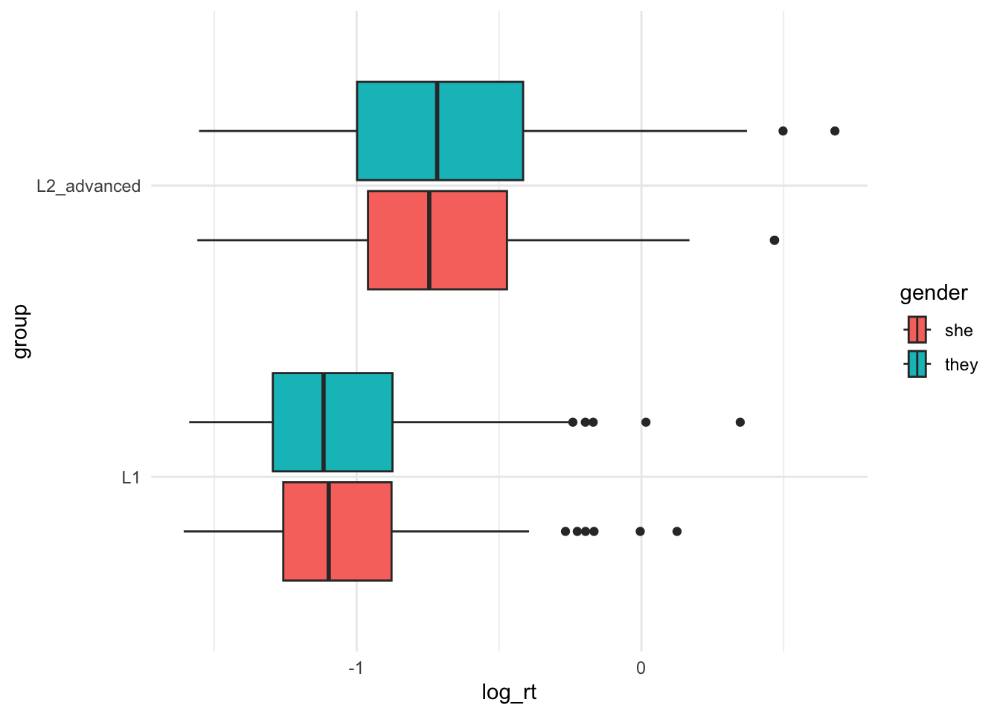
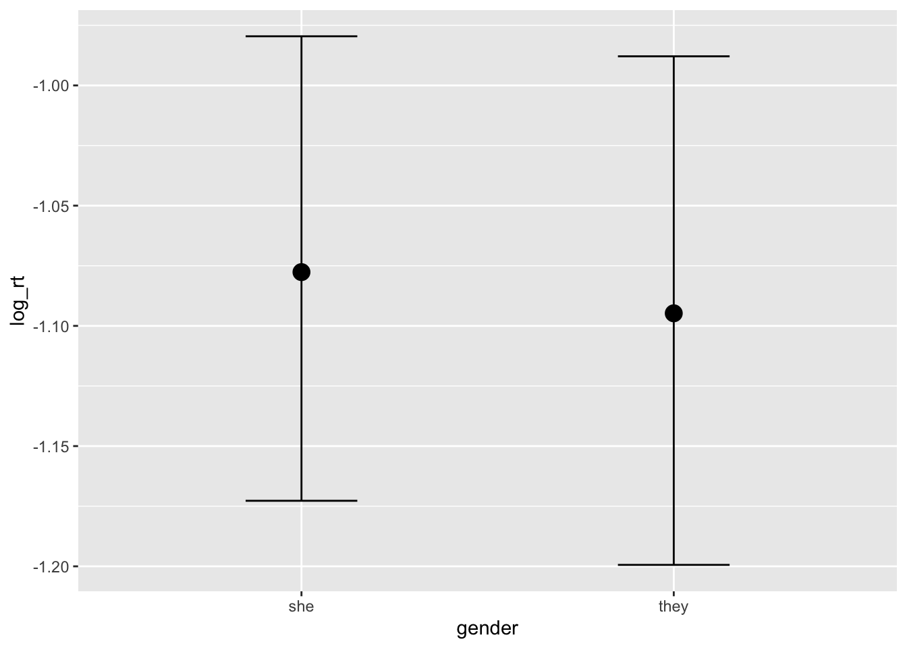
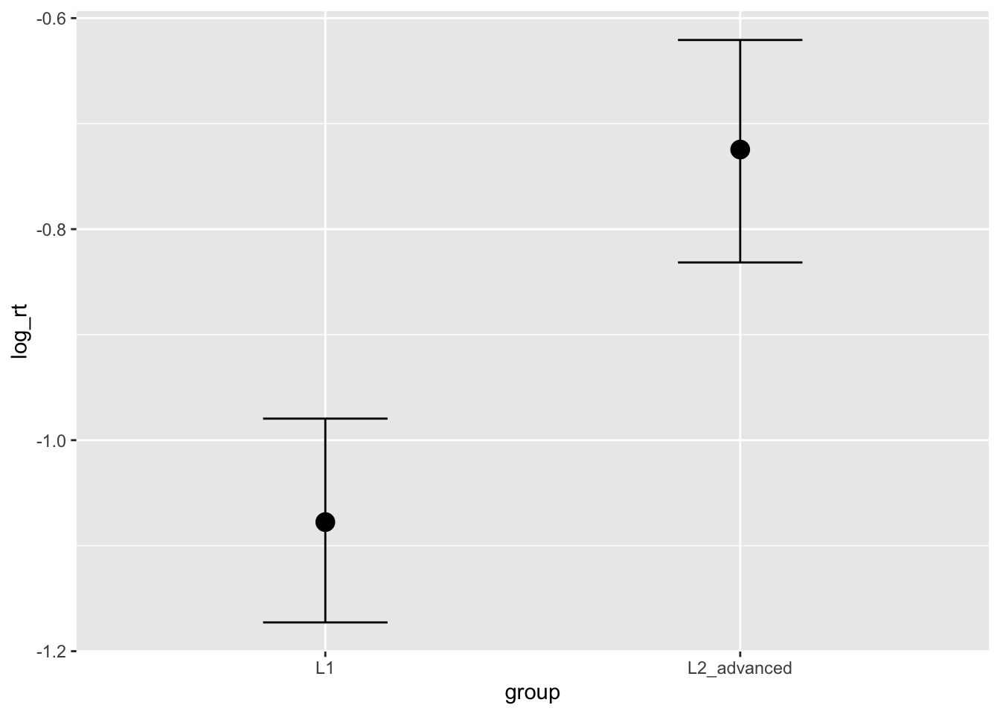
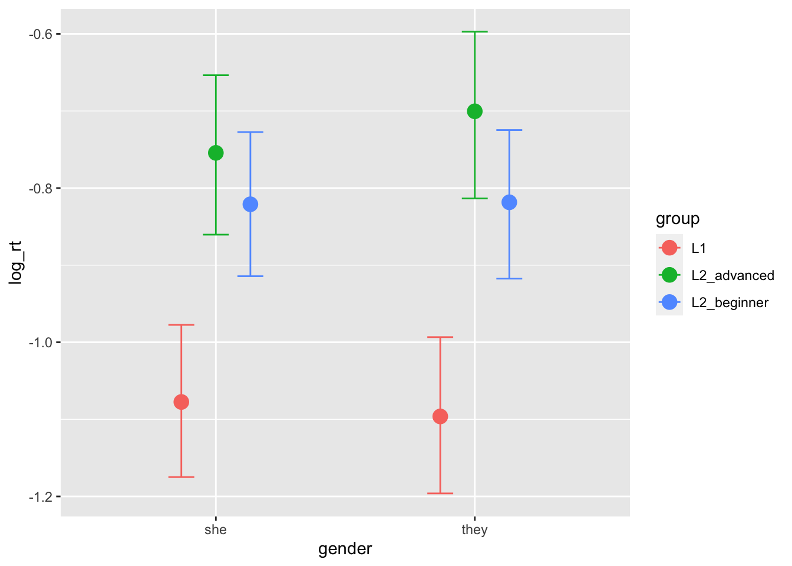
Family: gaussian
Links: mu = identity; sigma = identity
Formula: log_rt ~ gender * group + (gender | participant)
Data: key_word_data (Number of observations: 708)
Draws: 4 chains, each with iter = 2000; warmup = 1000; thin = 1;
total post-warmup draws = 4000
Multilevel Hyperparameters:
~participant (Number of levels: 51)
Estimate Est.Error l-95% CI u-95% CI Rhat Bulk_ESS
sd(Intercept) 0.24 0.03 0.19 0.30 1.00 758
sd(genderthey) 0.04 0.03 0.00 0.11 1.01 804
cor(Intercept,genderthey) 0.06 0.49 -0.88 0.91 1.00 2709
Tail_ESS
sd(Intercept) 1352
sd(genderthey) 1216
cor(Intercept,genderthey) 1836
Regression Coefficients:
Estimate Est.Error l-95% CI u-95% CI Rhat Bulk_ESS
Intercept -1.08 0.05 -1.17 -0.98 1.00 533
genderthey -0.02 0.03 -0.08 0.05 1.00 2192
groupL2_advanced 0.35 0.07 0.21 0.50 1.00 584
genderthey:groupL2_advanced 0.05 0.05 -0.04 0.14 1.00 2198
Tail_ESS
Intercept 985
genderthey 2105
groupL2_advanced 1046
genderthey:groupL2_advanced 2606
Further Distributional Parameters:
Estimate Est.Error l-95% CI u-95% CI Rhat Bulk_ESS Tail_ESS
sigma 0.29 0.01 0.28 0.31 1.00 3752 2662
Draws were sampled using sampling(NUTS). For each parameter, Bulk_ESS
and Tail_ESS are effective sample size measures, and Rhat is the potential
scale reduction factor on split chains (at convergence, Rhat = 1).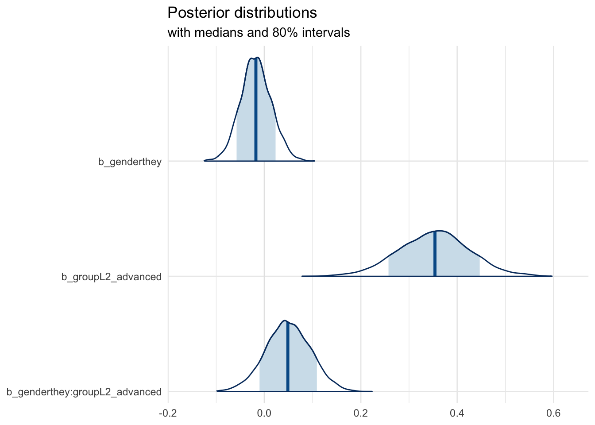
describe_posterior(
bayes_mod_kw,
effects = "fixed",
component = "all",
test = c("p_direction", "p_significance", "rope"),
centrality = "all"
) %>%
as.data.frame() %>%
mutate(across(where(is.numeric), round, 2)) %>%
knitr::kable(row.names = FALSE)Warning: 'xfun::attr()' is deprecated.
Use 'xfun::attr2()' instead.
See help("Deprecated")
Warning: 'xfun::attr()' is deprecated.
Use 'xfun::attr2()' instead.
See help("Deprecated")| Parameter | Component | Median | Mean | MAP | CI | CI_low | CI_high | pd | ps | ROPE_CI | ROPE_low | ROPE_high | ROPE_Percentage | Rhat | ESS |
|---|---|---|---|---|---|---|---|---|---|---|---|---|---|---|---|
| b_Intercept | conditional | -1.08 | -1.08 | -1.07 | 0.95 | -1.17 | -0.98 | 1.00 | 1.00 | 0.95 | -0.04 | 0.04 | 0.00 | 1 | 527.88 |
| b_genderthey | conditional | -0.02 | -0.02 | -0.02 | 0.95 | -0.08 | 0.05 | 0.72 | 0.22 | 0.95 | -0.04 | 0.04 | 0.78 | 1 | 2157.87 |
| b_groupL2_advanced | conditional | 0.35 | 0.35 | 0.36 | 0.95 | 0.21 | 0.50 | 1.00 | 1.00 | 0.95 | -0.04 | 0.04 | 0.00 | 1 | 579.39 |
| b_genderthey:groupL2_advanced | conditional | 0.05 | 0.05 | 0.04 | 0.95 | -0.04 | 0.14 | 0.86 | 0.57 | 0.95 | -0.04 | 0.04 | 0.42 | 1 | 2190.36 |
| sigma | sigma | 0.29 | 0.29 | 0.30 | 0.95 | 0.28 | 0.31 | 1.00 | 1.00 | 0.95 | -0.04 | 0.04 | 0.00 | 1 | 3700.73 |
Because model
reg1_dat = tidy_spr %>%
filter(word_position == "word4.rt")
bayes_mod_r1 = brms::brm(log_rt ~ gender*group +
(gender | participant), data = reg1_dat,
file = here("models", "because_mod.rds"))Compiling Stan program...Trying to compile a simple C fileRunning /Library/Frameworks/R.framework/Resources/bin/R CMD SHLIB foo.c
using C compiler: ‘Apple clang version 14.0.0 (clang-1400.0.29.202)’
using SDK: ‘MacOSX13.1.sdk’
clang -arch arm64 -I"/Library/Frameworks/R.framework/Resources/include" -DNDEBUG -I"/Library/Frameworks/R.framework/Versions/4.3-arm64/Resources/library/Rcpp/include/" -I"/Library/Frameworks/R.framework/Versions/4.3-arm64/Resources/library/RcppEigen/include/" -I"/Library/Frameworks/R.framework/Versions/4.3-arm64/Resources/library/RcppEigen/include/unsupported" -I"/Library/Frameworks/R.framework/Versions/4.3-arm64/Resources/library/BH/include" -I"/Library/Frameworks/R.framework/Versions/4.3-arm64/Resources/library/StanHeaders/include/src/" -I"/Library/Frameworks/R.framework/Versions/4.3-arm64/Resources/library/StanHeaders/include/" -I"/Library/Frameworks/R.framework/Versions/4.3-arm64/Resources/library/RcppParallel/include/" -I"/Library/Frameworks/R.framework/Versions/4.3-arm64/Resources/library/rstan/include" -DEIGEN_NO_DEBUG -DBOOST_DISABLE_ASSERTS -DBOOST_PENDING_INTEGER_LOG2_HPP -DSTAN_THREADS -DUSE_STANC3 -DSTRICT_R_HEADERS -DBOOST_PHOENIX_NO_VARIADIC_EXPRESSION -D_HAS_AUTO_PTR_ETC=0 -include '/Library/Frameworks/R.framework/Versions/4.3-arm64/Resources/library/StanHeaders/include/stan/math/prim/fun/Eigen.hpp' -D_REENTRANT -DRCPP_PARALLEL_USE_TBB=1 -I/opt/R/arm64/include -fPIC -falign-functions=64 -Wall -g -O2 -c foo.c -o foo.o
In file included from <built-in>:1:
In file included from /Library/Frameworks/R.framework/Versions/4.3-arm64/Resources/library/StanHeaders/include/stan/math/prim/fun/Eigen.hpp:22:
In file included from /Library/Frameworks/R.framework/Versions/4.3-arm64/Resources/library/RcppEigen/include/Eigen/Dense:1:
In file included from /Library/Frameworks/R.framework/Versions/4.3-arm64/Resources/library/RcppEigen/include/Eigen/Core:19:
/Library/Frameworks/R.framework/Versions/4.3-arm64/Resources/library/RcppEigen/include/Eigen/src/Core/util/Macros.h:679:10: fatal error: 'cmath' file not found
#include <cmath>
^~~~~~~
1 error generated.
make: *** [foo.o] Error 1Start sampling
SAMPLING FOR MODEL 'anon_model' NOW (CHAIN 1).
Chain 1:
Chain 1: Gradient evaluation took 0.000123 seconds
Chain 1: 1000 transitions using 10 leapfrog steps per transition would take 1.23 seconds.
Chain 1: Adjust your expectations accordingly!
Chain 1:
Chain 1:
Chain 1: Iteration: 1 / 2000 [ 0%] (Warmup)
Chain 1: Iteration: 200 / 2000 [ 10%] (Warmup)
Chain 1: Iteration: 400 / 2000 [ 20%] (Warmup)
Chain 1: Iteration: 600 / 2000 [ 30%] (Warmup)
Chain 1: Iteration: 800 / 2000 [ 40%] (Warmup)
Chain 1: Iteration: 1000 / 2000 [ 50%] (Warmup)
Chain 1: Iteration: 1001 / 2000 [ 50%] (Sampling)
Chain 1: Iteration: 1200 / 2000 [ 60%] (Sampling)
Chain 1: Iteration: 1400 / 2000 [ 70%] (Sampling)
Chain 1: Iteration: 1600 / 2000 [ 80%] (Sampling)
Chain 1: Iteration: 1800 / 2000 [ 90%] (Sampling)
Chain 1: Iteration: 2000 / 2000 [100%] (Sampling)
Chain 1:
Chain 1: Elapsed Time: 2.525 seconds (Warm-up)
Chain 1: 0.805 seconds (Sampling)
Chain 1: 3.33 seconds (Total)
Chain 1:
SAMPLING FOR MODEL 'anon_model' NOW (CHAIN 2).
Chain 2:
Chain 2: Gradient evaluation took 5.2e-05 seconds
Chain 2: 1000 transitions using 10 leapfrog steps per transition would take 0.52 seconds.
Chain 2: Adjust your expectations accordingly!
Chain 2:
Chain 2:
Chain 2: Iteration: 1 / 2000 [ 0%] (Warmup)
Chain 2: Iteration: 200 / 2000 [ 10%] (Warmup)
Chain 2: Iteration: 400 / 2000 [ 20%] (Warmup)
Chain 2: Iteration: 600 / 2000 [ 30%] (Warmup)
Chain 2: Iteration: 800 / 2000 [ 40%] (Warmup)
Chain 2: Iteration: 1000 / 2000 [ 50%] (Warmup)
Chain 2: Iteration: 1001 / 2000 [ 50%] (Sampling)
Chain 2: Iteration: 1200 / 2000 [ 60%] (Sampling)
Chain 2: Iteration: 1400 / 2000 [ 70%] (Sampling)
Chain 2: Iteration: 1600 / 2000 [ 80%] (Sampling)
Chain 2: Iteration: 1800 / 2000 [ 90%] (Sampling)
Chain 2: Iteration: 2000 / 2000 [100%] (Sampling)
Chain 2:
Chain 2: Elapsed Time: 2.621 seconds (Warm-up)
Chain 2: 0.782 seconds (Sampling)
Chain 2: 3.403 seconds (Total)
Chain 2:
SAMPLING FOR MODEL 'anon_model' NOW (CHAIN 3).
Chain 3:
Chain 3: Gradient evaluation took 4.5e-05 seconds
Chain 3: 1000 transitions using 10 leapfrog steps per transition would take 0.45 seconds.
Chain 3: Adjust your expectations accordingly!
Chain 3:
Chain 3:
Chain 3: Iteration: 1 / 2000 [ 0%] (Warmup)
Chain 3: Iteration: 200 / 2000 [ 10%] (Warmup)
Chain 3: Iteration: 400 / 2000 [ 20%] (Warmup)
Chain 3: Iteration: 600 / 2000 [ 30%] (Warmup)
Chain 3: Iteration: 800 / 2000 [ 40%] (Warmup)
Chain 3: Iteration: 1000 / 2000 [ 50%] (Warmup)
Chain 3: Iteration: 1001 / 2000 [ 50%] (Sampling)
Chain 3: Iteration: 1200 / 2000 [ 60%] (Sampling)
Chain 3: Iteration: 1400 / 2000 [ 70%] (Sampling)
Chain 3: Iteration: 1600 / 2000 [ 80%] (Sampling)
Chain 3: Iteration: 1800 / 2000 [ 90%] (Sampling)
Chain 3: Iteration: 2000 / 2000 [100%] (Sampling)
Chain 3:
Chain 3: Elapsed Time: 2.354 seconds (Warm-up)
Chain 3: 1.456 seconds (Sampling)
Chain 3: 3.81 seconds (Total)
Chain 3:
SAMPLING FOR MODEL 'anon_model' NOW (CHAIN 4).
Chain 4:
Chain 4: Gradient evaluation took 4.7e-05 seconds
Chain 4: 1000 transitions using 10 leapfrog steps per transition would take 0.47 seconds.
Chain 4: Adjust your expectations accordingly!
Chain 4:
Chain 4:
Chain 4: Iteration: 1 / 2000 [ 0%] (Warmup)
Chain 4: Iteration: 200 / 2000 [ 10%] (Warmup)
Chain 4: Iteration: 400 / 2000 [ 20%] (Warmup)
Chain 4: Iteration: 600 / 2000 [ 30%] (Warmup)
Chain 4: Iteration: 800 / 2000 [ 40%] (Warmup)
Chain 4: Iteration: 1000 / 2000 [ 50%] (Warmup)
Chain 4: Iteration: 1001 / 2000 [ 50%] (Sampling)
Chain 4: Iteration: 1200 / 2000 [ 60%] (Sampling)
Chain 4: Iteration: 1400 / 2000 [ 70%] (Sampling)
Chain 4: Iteration: 1600 / 2000 [ 80%] (Sampling)
Chain 4: Iteration: 1800 / 2000 [ 90%] (Sampling)
Chain 4: Iteration: 2000 / 2000 [100%] (Sampling)
Chain 4:
Chain 4: Elapsed Time: 2.206 seconds (Warm-up)
Chain 4: 1.18 seconds (Sampling)
Chain 4: 3.386 seconds (Total)
Chain 4: brms::conditional_effects(bayes_mod_r1)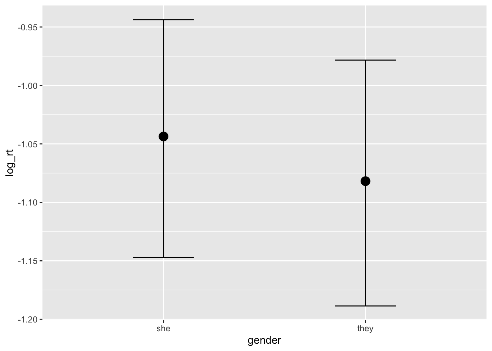
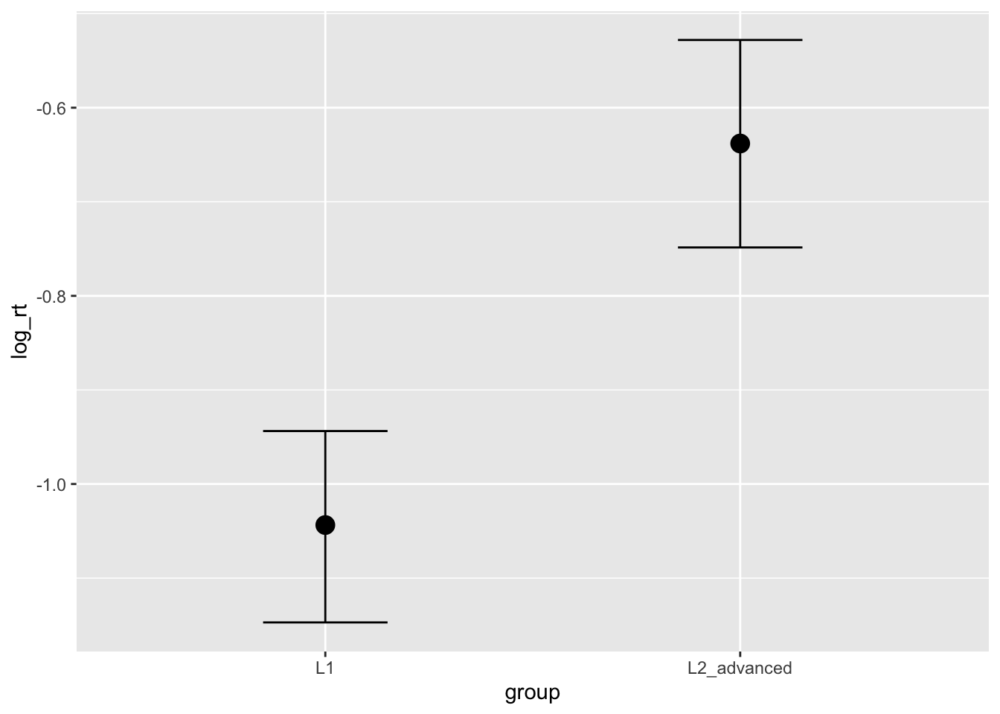
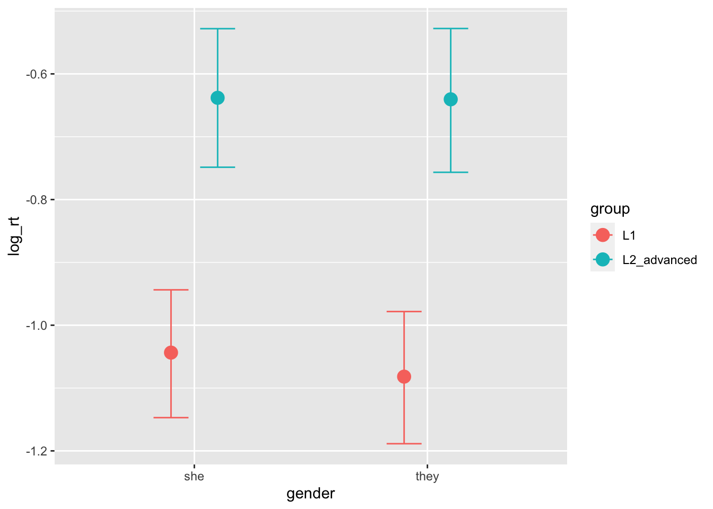
describe_posterior(
bayes_mod_r1,
effects = "fixed",
component = "all",
test = c("p_direction", "p_significance", "rope"),
centrality = "all"
) %>%
as.data.frame() %>%
mutate(across(where(is.numeric), round, 2)) %>%
knitr::kable(row.names = FALSE)Warning: 'xfun::attr()' is deprecated.
Use 'xfun::attr2()' instead.
See help("Deprecated")
Warning: 'xfun::attr()' is deprecated.
Use 'xfun::attr2()' instead.
See help("Deprecated")| Parameter | Component | Median | Mean | MAP | CI | CI_low | CI_high | pd | ps | ROPE_CI | ROPE_low | ROPE_high | ROPE_Percentage | Rhat | ESS |
|---|---|---|---|---|---|---|---|---|---|---|---|---|---|---|---|
| b_Intercept | conditional | -1.04 | -1.04 | -1.04 | 0.95 | -1.15 | -0.94 | 1.00 | 1.00 | 0.95 | -0.04 | 0.04 | 0.00 | 1 | 853.90 |
| b_genderthey | conditional | -0.04 | -0.04 | -0.04 | 0.95 | -0.11 | 0.03 | 0.86 | 0.45 | 0.95 | -0.04 | 0.04 | 0.56 | 1 | 3288.05 |
| b_groupL2_advanced | conditional | 0.41 | 0.41 | 0.41 | 0.95 | 0.26 | 0.56 | 1.00 | 1.00 | 0.95 | -0.04 | 0.04 | 0.00 | 1 | 840.77 |
| b_genderthey:groupL2_advanced | conditional | 0.03 | 0.03 | 0.03 | 0.95 | -0.07 | 0.13 | 0.75 | 0.42 | 0.95 | -0.04 | 0.04 | 0.55 | 1 | 3083.36 |
| sigma | sigma | 0.31 | 0.31 | 0.31 | 0.95 | 0.30 | 0.33 | 1.00 | 1.00 | 0.95 | -0.04 | 0.04 | 0.00 | 1 | 4526.35 |